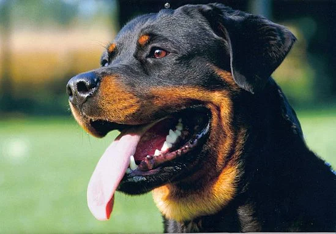

Rottweiler
Personalidad
Los rottweilers permanecen incondicionalmente fieles a sus dueños y sus familias, y los defenderán tanto a ellos y como a sus propiedades hasta el final. Es una raza popular entre criadores sin escrúpulos, de modo que es muy importante encontrar un cachorro bien adiestrado y bien socializado, ya que su carácter puede variar. Recalcamos la importancia vital de la sociabilización y del adiestramiento de estos perros desde una edad temprana. No es una raza recomendable para dueños primerizos o sin experiencia.
Origen
Los antepasados de esta raza podrían ser los perros que usaban las legiones romanas para guiar y proteger a su ganado cuando cruzaron los Alpes. En la Edad Media, en Rottweil, Alemania, estos perros se cruzaron con los perros pastores locales y así crearon el Rottweiler Metzgerhund, es decir, el perro del carnicero de Rottweil. Los carniceros usaban a estos perros para guiar y proteger a su ganado cuando iban caminando de ciudad en ciudad. En el siglo XIX se prohibió el traslado de ganado en Alemania y el rottweiler sufrió un gran declive hasta el año 1914, cuando volvieron a emplearse, esta vez para la guerra, donde demostraron sus capacidades físicas y mentales.